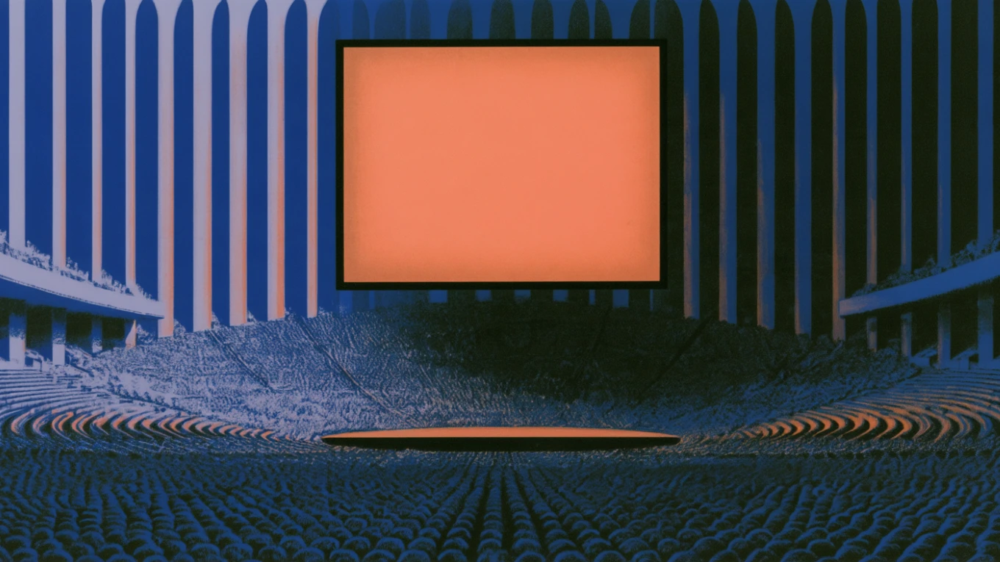
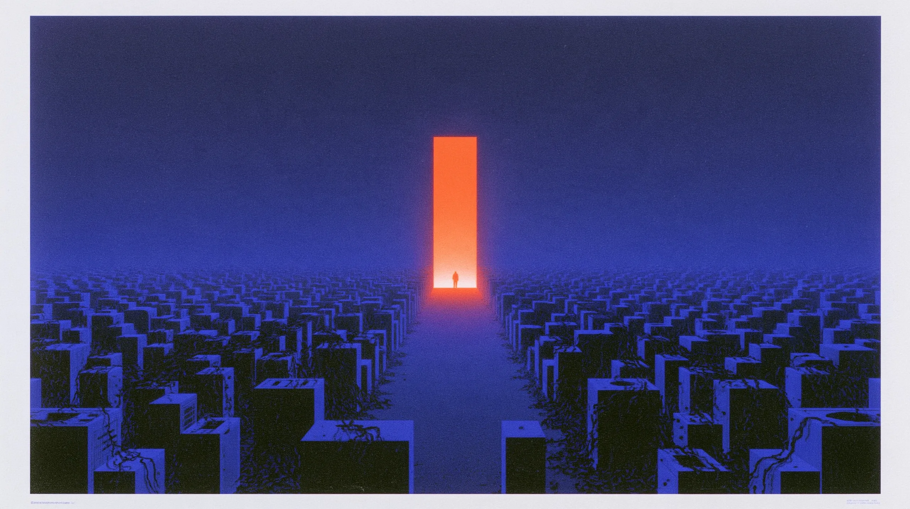

Sur l’IA,
tout le monde a un avis.
Venez vous faire
le vôtre.
Ces phrases, vous les avez déjà entendues.
Deux parcours, une journée pour y répondre :
Parcours 01
Pour celles et ceux
qui décident
Parcours 02
Pour celles et ceux
qui implémentent
Des temps forts à partager.
Keynotes
Startup Contest
Podcast en public
DJ set
Intervenants de premier plan.
Nos partenaires rendent cette journée possible.
GEN
AI
DAYS
LA Conf Gen AI dédiée aux décideurs et leurs équipes techs
2 tracks pour décider où investir et comprendre comment déployer
Mardi 17 novembre 2026 · Hôtel de Région, Nantes · 08 h 30 à 22 h
Prenez votre place
genai-days-nantes.com